Văn phòng AI của riêng bạn,
chạy ngay trên máy bạn.
agent-office cho mỗi project một đội agent AI. Họ nhận việc qua chat (dashboard, Discord, Telegram), sửa code trong git worktree riêng, chạy dev server, giám sát dịch vụ, và chỉ hỏi bạn khi cần duyệt.
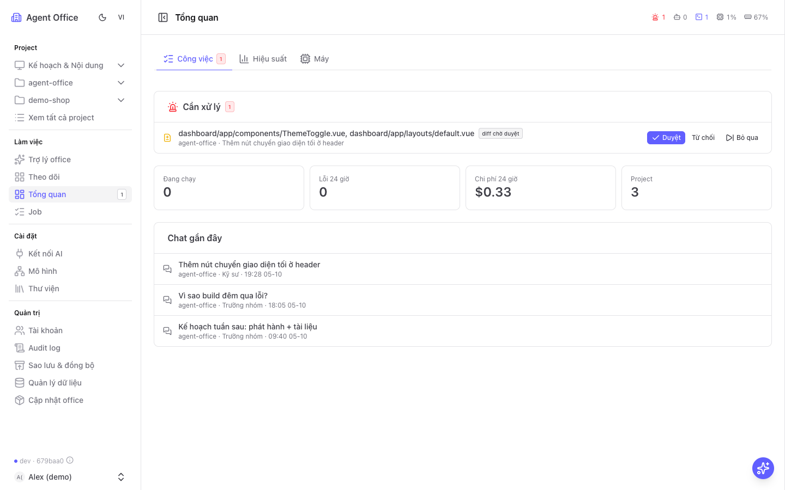
1agent-office là gì
Hãy hình dung một văn phòng mà nhân viên là các agent AI, còn bạn là người quản lý.
Thuật ngữ
| Từ | Nghĩa |
|---|---|
| Project | Một thư mục (thường là git repo), một link git để clone, hoặc trợ lý không thư mục cho việc ngoài code. |
| Mô hình tổ chức | Tập agent của một project và cách họ phối hợp. |
| Agent | Một nhân viên AI: vai trò, hướng dẫn, kết nối AI, hạng model, quyền, trí nhớ. |
| Chat | Cuộc trò chuyện với một hoặc nhiều agent. Mỗi chat có worktree riêng. |
| Đề xuất | Việc agent muốn làm nhưng cần người duyệt: một diff, một lệnh, khởi động lại, đổi cài đặt. |
| Job | Một lần chạy bất kỳ (lượt chat, tự động hóa, phân tích giám sát), kèm chi phí và kết quả. |
2Cài đặt & chạy lần đầu
Cần Go ≥ 1.27, Node 22, pnpm và ít nhất một tài khoản AI.
claude (hoặc codex) trong thư mục rồi nhắn "chạy project này giúp mình". AI build mọi thứ, bật office và đưa bạn đường link. Nếu nó hỏi gì đó, đó là yêu cầu duyệt đầu tiên của văn phòng.Hoặc làm thủ công:
make build # → bin/office
make ui-install && make ui-build # → dashboard/.output
./bin/office run # API ở :8787, dashboard ở http://localhost:2704- Mở
http://localhost:2704(hoặc địa chỉ server) và đăng nhập bằngadmin/admin. - Đặt email và mật khẩu của bạn. Trước khi đặt, tài khoản mặc định không làm được gì khác.
- Làm theo checklist ở Tổng quan → Máy: kết nối AI → project → mô hình tổ chức.
- Tùy chọn:
./bin/office service install --nowđể office tự bật mỗi khi đăng nhập máy (LaunchAgent trên macOS, systemd user unit trên Linux).
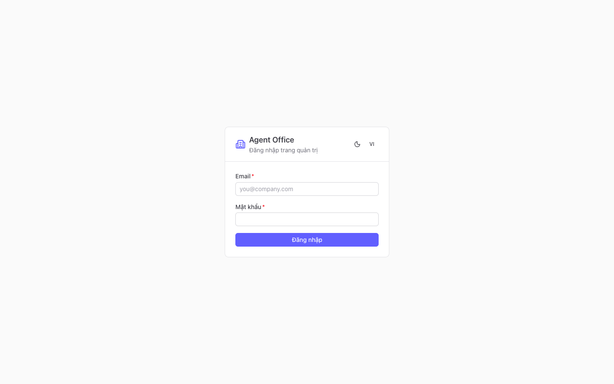
office init hỏi email và mật khẩu admin (Enter = giữ admin / admin). Với Docker hay script, office user create --email ban@example.com thay luôn admin / admin. Quên mật khẩu thì office user passwd --email ….~/.agent-office (một office cho cả máy). Chạy office init --local trong một repo để giữ dữ liệu trong <repo>/.office.3Tổng quan
Hộp thư của bạn: mọi thứ cần quyết, từ mọi project, gom vào một danh sách.
- Tab Công việc: đề xuất chờ duyệt, job lỗi, tiến trình đã dừng, giám sát đang Down, tự động hóa bị tắt, bot mất kết nối, chat chưa đọc. Xử lý ngay tại chỗ, hoặc Bỏ qua tất cả.
- Tab Hiệu suất: chi phí và số lượt chạy theo ngày, theo project và theo model, trong 7/30/90 ngày.
- Tab Máy (admin): CPU/RAM, các tiến trình của office (đóng hoặc kill), kết nối AI và checklist thiết lập.
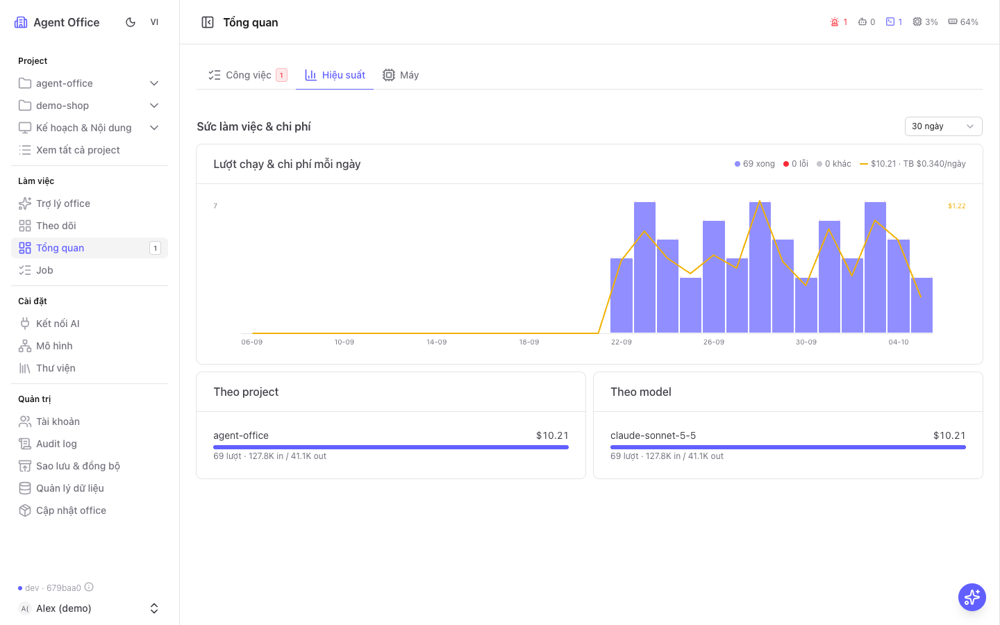
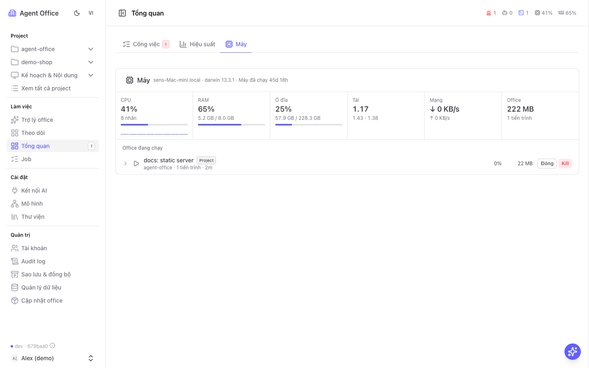
4Kết nối AI
Khai báo những tài khoản AI office được dùng. Agent chọn từ danh sách này.
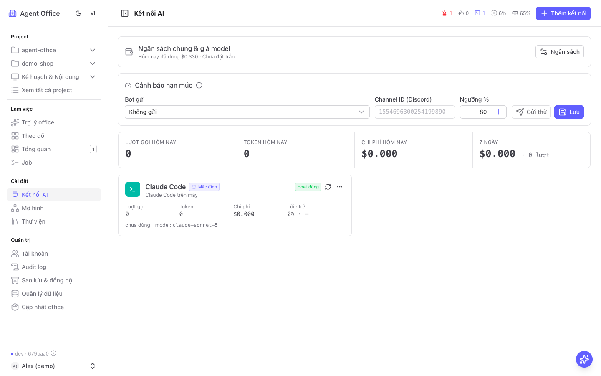
| Loại | Ghi chú |
|---|---|
| Claude Code CLI | Dùng gói Claude của bạn. Cài và đăng nhập ngay trên dashboard. Hiện hạn mức sử dụng (khung 5 giờ và theo tuần). |
| Codex CLI | Dùng tài khoản ChatGPT/Codex. Cài và đăng nhập giống trên. |
| Anthropic / OpenAI API | API key, lưu mã hóa. Chi phí tính theo bảng giá (sửa được). |
| API tương thích OpenAI | Hơn 18 nhà cung cấp có sẵn: OpenRouter, Gemini, DeepSeek, GLM, Kimi, Ollama… hoặc bất kỳ base URL nào. |
- Bấm Thêm kết nối, chọn loại, dán key hoặc đăng nhập.
- Bấm Kiểm tra (miễn phí) hoặc Gửi thử (tốn token).
- Đặt một kết nối làm mặc định. Agent không tự chọn sẽ dùng kết nối này.
5Project
Mọi công việc đều nằm trong một project.
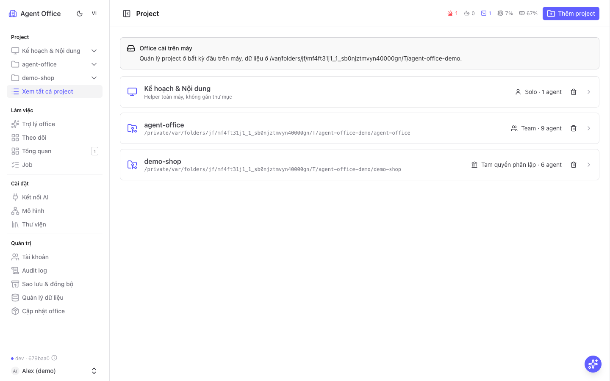
- Thư mục: chọn một thư mục có sẵn bằng cây thư mục.
- Clone: dán link git (https, ssh hoặc dạng scp). Mặc định office clone vào cùng cấp với thư mục chứa office.
- Không thư mục: trợ lý cho lập kế hoạch, viết bài hay việc chung của cả máy.
- Chọn mô hình tổ chức ngay, hoặc để sau qua menu ⋯ của project.
Trong một project có các tab: Chat, Tự động, Vận hành, Agents, Quyền; admin thấy thêm Files, Skills, MCP, Burn, Nhật ký, Thông tin. Thanh tiêu đề hiện nhánh git kèm nút fetch, commit và push.
6Thiết lập bằng AI
Để một agent đọc repo và đề xuất đội phù hợp.
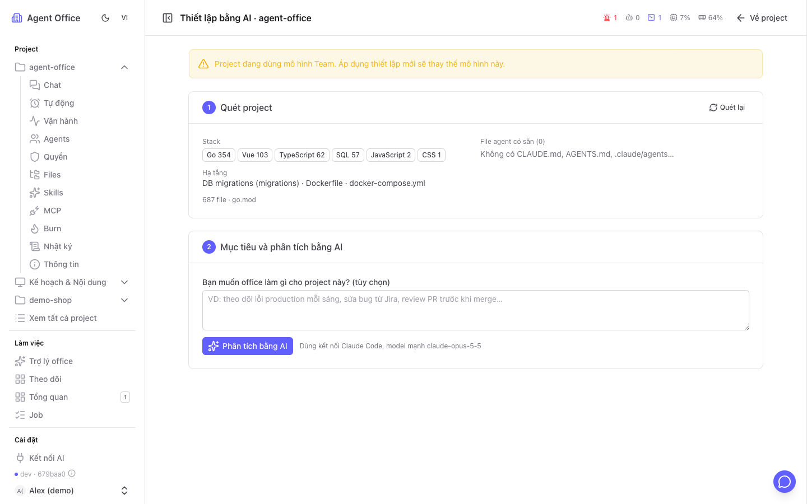
- Quét (miễn phí): manifest, framework, file hạ tầng, các file agent sẵn có như
CLAUDE.mdhay.claude/agents. - Đề xuất: AI gợi ý mô hình và tinh chỉnh từng agent, có lý do cho mỗi lựa chọn và ước tính chi phí.
- Đổi mẫu hoặc tùy chọn thì bản xem trước tự dựng lại. Chưa có gì được ghi cho tới khi bạn bấm Tạo.
7Mô hình tổ chức
Cách các agent trong project được sắp xếp và ra quyết định.
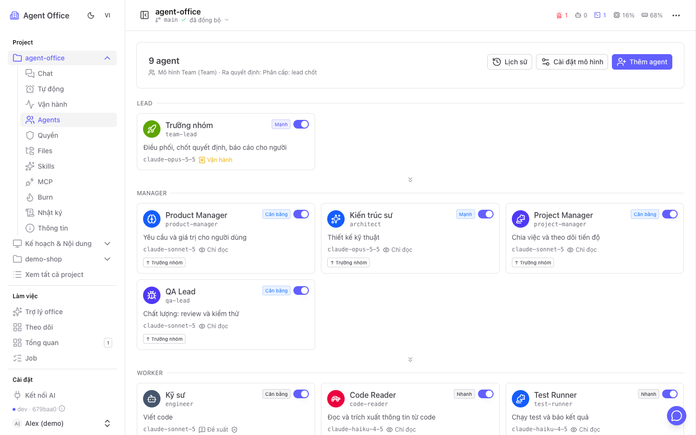
| Mô hình | Cách làm việc | Hợp với |
|---|---|---|
| Solo | Một agent làm hết. | Repo nhỏ, trợ lý cá nhân. |
| Team | Trưởng nhóm lập kế hoạch, chia việc (quy ước chung, tối đa 3 file mỗi việc, không chồng file, có phụ thuộc), các thành viên làm song song, trưởng nhóm gộp và báo cáo. | Phần lớn project code. |
| Tam quyền | Lập pháp, hành pháp, tư pháp: đề xuất được biểu quyết, có thể bị phủ quyết, và kết quả được kiểm tra lại. | Thay đổi rủi ro, thanh toán, bảo mật. |
| Tự tạo | Lưu mô hình của một project làm mẫu, hoặc dựng từ đầu. | Dùng lại cách làm hiệu quả. |
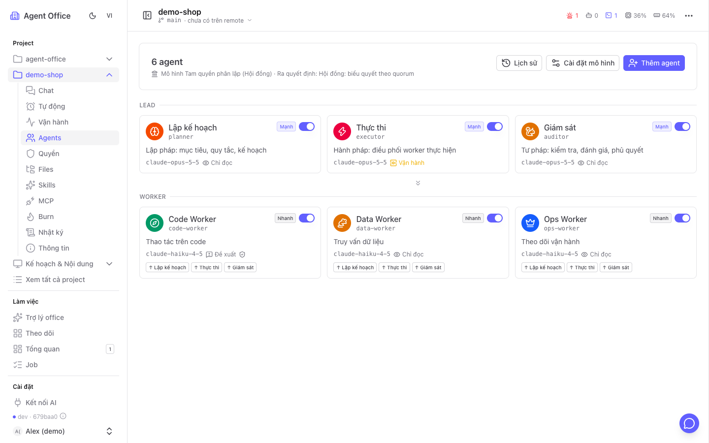
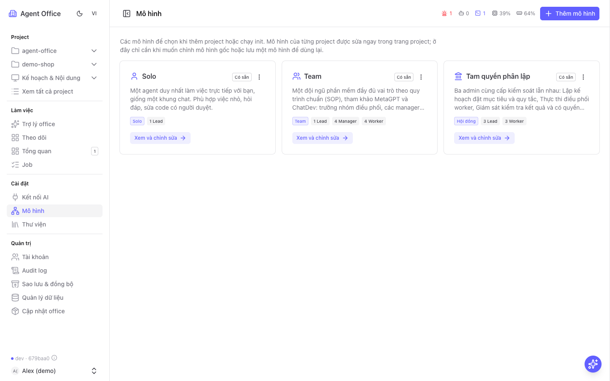
8Agent
Mỗi agent là một nhân viên bạn có thể tinh chỉnh.
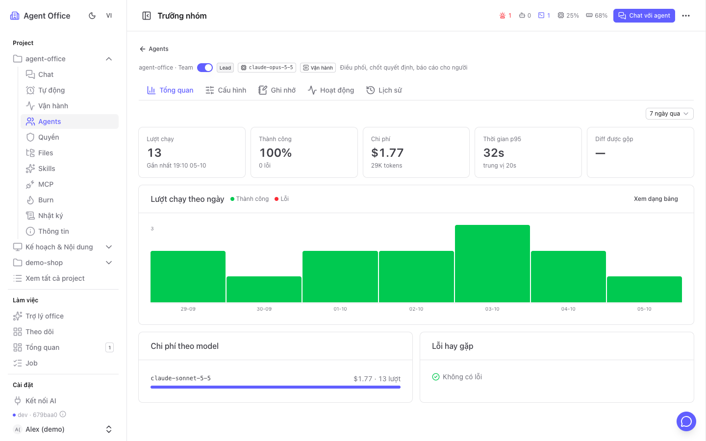
- Số liệu: lượt chạy, chi phí và tỉ lệ lỗi theo ngày và theo model, chat gần đây.
- Model: kết nối AI, hạng model (mạnh / cân bằng / nhanh), mức suy nghĩ, kết nối dự phòng.
- Hướng dẫn: vai trò và quy tắc thêm, được ghép vào system prompt.
- Quyền: một gói có sẵn hoặc từng quyền lẻ. Xem mục Quyền.
- Trí nhớ: ghi chú lâu dài agent mang theo vào mọi chat ("repo dùng pnpm", "làm thẳng trên main"). Agent tự thêm ghi chú bằng
remember. Ghi chú dài được một model nhanh rút gọn. - Lịch sử: mọi lần đổi cài đặt kèm diff. Khôi phục được bất kỳ phiên bản nào.
- Công tắc bật/tắt: agent tạm nghỉ bị ẩn khỏi chat và
@. Ai gọi tới chỉ nhận thông báo, không tốn token.
Mỗi thẻ tự lưu khi bạn sửa.
9Chat
Nơi công việc diễn ra. Nói chuyện với một agent, hoặc kéo nhiều agent vào cùng nhóm.
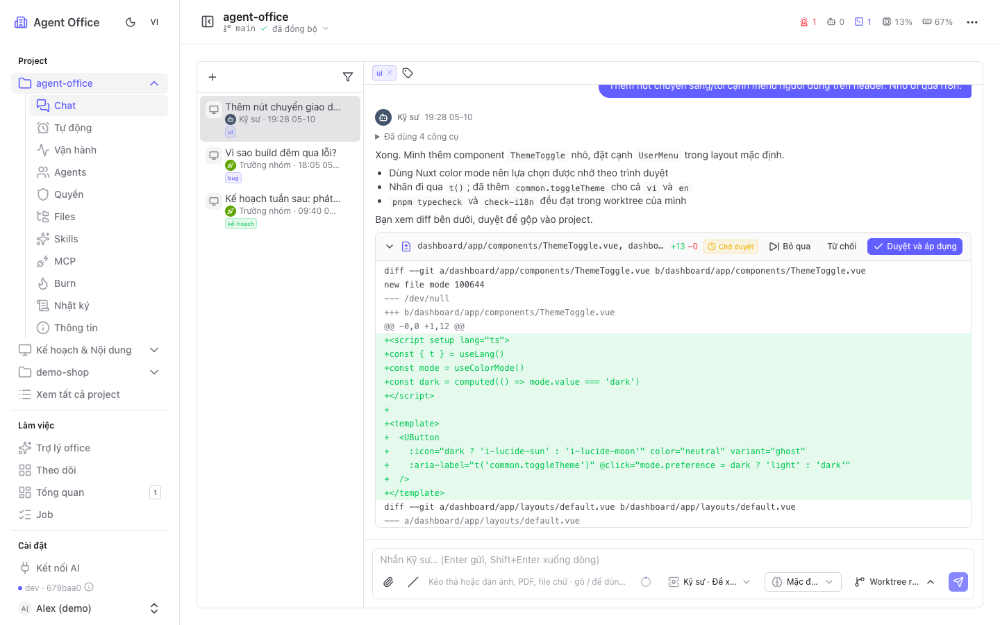
Giao việc
- Gõ việc rồi bấm Enter. Câu trả lời hiện dần, kèm từng lần gọi công cụ (đọc, sửa, chạy lệnh).
@tênkéo agent khác vào chat. Mỗi agent có phiên riêng và chỉ thấy tin nhắn mới./skillgọi một skill của project, của máy hoặc của plugin.- Đính kèm ảnh, PDF, file chữ hoặc log (kéo thả, dán, hoặc nút kẹp giấy).
- Agent có thể giao việc cho nhau: việc chạy nền như subagent, xong thì kết quả quay về chat.
Sắp xếp chat
- Tag: thêm ở dòng tag hoặc menu ⋯. Lọc theo nhiều tag cùng lúc.
- Lọc nguồn: web, Discord, Telegram, tự động hóa, Burn.
- Chép link tới bất kỳ tin nhắn nào. Dán link chat vào chat khác thì agent đọc được.
- Agent tìm được chat cũ (
search_history) khi bạn nói "như lần trước".
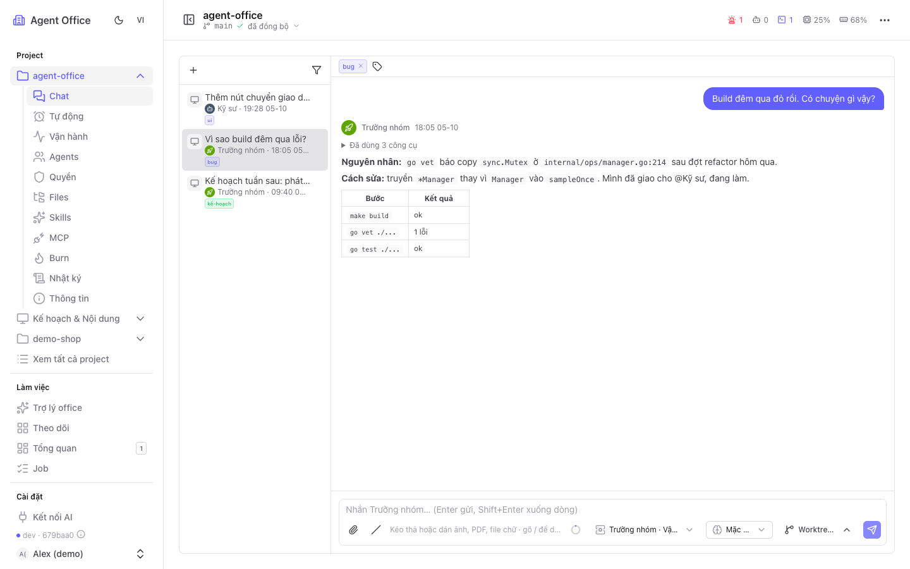
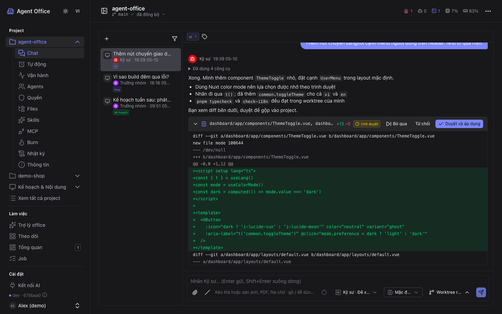
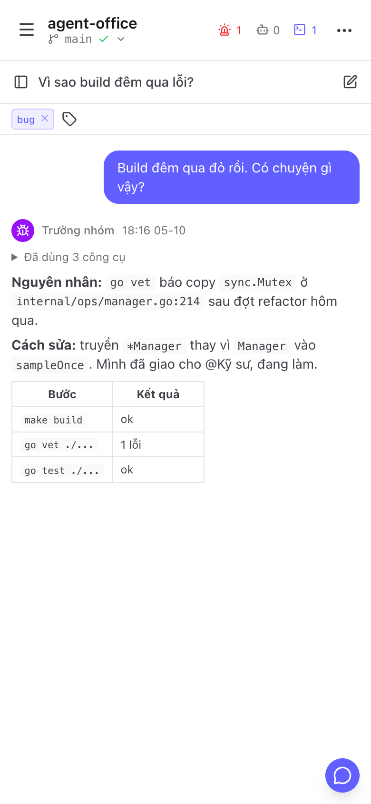
10Duyệt đề xuất
Agent đề xuất, bạn quyết định.
| Thẻ | Khi được duyệt |
|---|---|
| Diff | Gộp thay đổi trong worktree của agent vào project. Xem theo từng file. |
| Lệnh | Chạy một lệnh không nằm trong danh sách được phép của agent. |
| Tiến trình / container | Bật, chạy lại hoặc dừng dev server, job, service docker compose. |
| Git | Commit, tạo nhánh, push (push luôn cần người duyệt). |
| Đổi cài đặt | Một tự động hóa, agent, giám sát hay quyền mà agent muốn tạo hoặc sửa. |
| Gọi MCP | Công cụ có ghi dữ liệu lên dịch vụ bên ngoài. |
- Duyệt: chạy, rồi agent tự làm tiếp.
- Duyệt & luôn cho phép: lưu mẫu lệnh vào quyền của agent. Mẫu nguy hiểm bị từ chối.
- Từ chối: agent được báo và có thể thử cách khác.
- Bỏ qua: gạt đi mà agent không chạy lại. Bỏ qua tất cả dọn sạch một project.
/skip, /bo-qua. Quyết ở một nơi thì nơi kia tự cập nhật.11Quyền
Theo từng hành động, từng agent, có gói sẵn để không phải bắt đầu từ con số không.
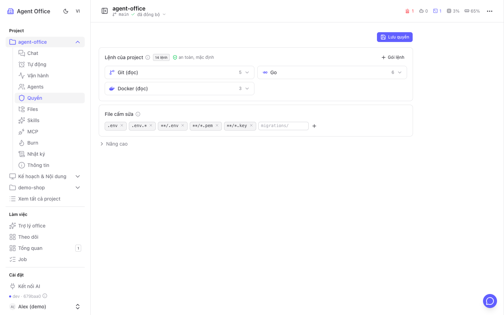
- Gói lệnh: nhóm lệnh theo công cụ (Git, Go, Docker…), có gói chỉ đọc. Sửa được hoặc tự tạo gói mới.
- Mẫu lệnh:
go test *,pnpm typecheck… Dấu*ở cuối cho phép tham số tùy ý, nhưng cờ nguy hiểm (-exec,--output,--no-index, đường dẫn ra ngoài project) vẫn bị chặn. - File cấm sửa: file bí mật và file agent không bao giờ được sửa.
- Quyền administrator đặt trên agent. Tự động hóa kế thừa hoặc ghi đè.
12Vận hành & giám sát
Chạy project như pm2, và agent đọc đúng log bạn đang xem.
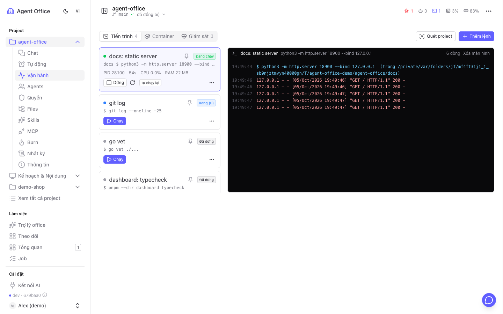
Tiến trình
- Bấm Quét project: office tìm lệnh trong
Makefile,package.json,docker-compose.yml… Ghim lệnh hay dùng. - Bật, dừng hoặc chạy lại. Service có thể tự chạy lại khi chết và tự bật cùng office.
- Mở log trực tiếp. Hỏi agent đính kèm 300 dòng log cuối vào chat; Sửa lỗi mở chat mới và gửi luôn.
Container
Stack docker compose: trạng thái, cổng, CPU/RAM/mạng, up/stop/restart/down/pull/build theo stack hoặc service, log trực tiếp.
Giám sát
| Loại | Kiểm tra |
|---|---|
| HTTP | Mã trạng thái, từ khóa, timeout. |
| TCP | Một host:port còn trả lời. |
| Heartbeat | Cron job của bạn gọi một URL bí mật. Không thấy ping là Down. |
| Tiến trình / container | Một tiến trình của office hay một service compose đang chạy. |
Mỗi giám sát hiện uptime 24 giờ, độ trễ và xu hướng. Bật AI phân tích để agent điều tra khi Down, có ngân sách theo ngày và thời gian chờ giữa hai lần.
13Tự động hóa
Việc tự bắt đầu: theo lịch, từ webhook, hoặc từ tin nhắn chat.
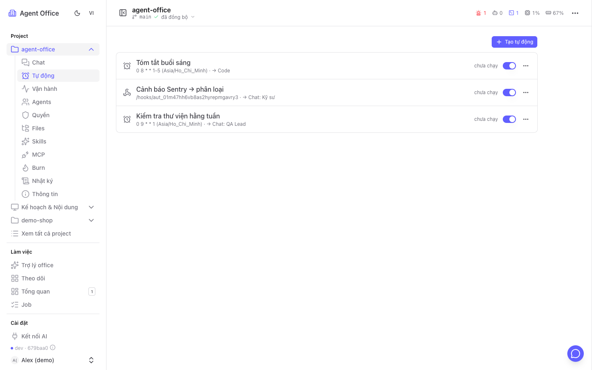
| Kích hoạt | Ví dụ |
|---|---|
| Lịch | Cron + múi giờ, hoặc mỗi N phút. "T2–T6 8:00: tóm tắt commit hôm qua." |
| Webhook | URL bí mật có token. "Cảnh báo Sentry → phân loại và đề xuất cách sửa." |
| Telegram / Discord | Tin nhắn trong chat của bot, có thể kèm lệnh như /deploy. |
| Hành động | Chi phí |
|---|---|
| Script (bash, node, python) | Miễn phí. Chạy trong thư mục project, nhận payload qua stdin và $OFFICE_PAYLOAD. Chỉ gọi agent khi script lỗi, hoặc khi in dòng @@agent: …. |
| Chat | Gửi prompt cho agent. Dùng được {{payload}}, {{today}}. |
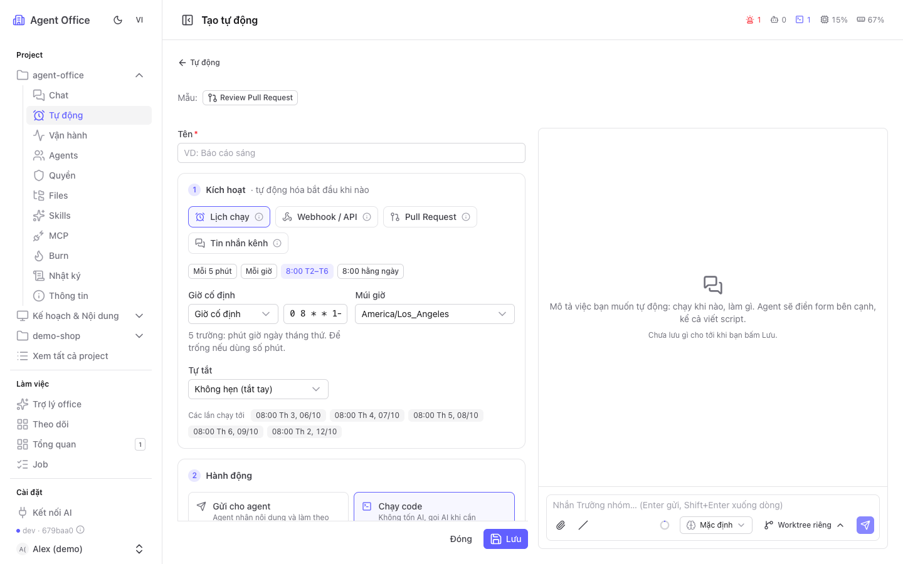
14Bot Discord & Telegram
Giao việc cho đội và duyệt đề xuất ngay trên điện thoại.
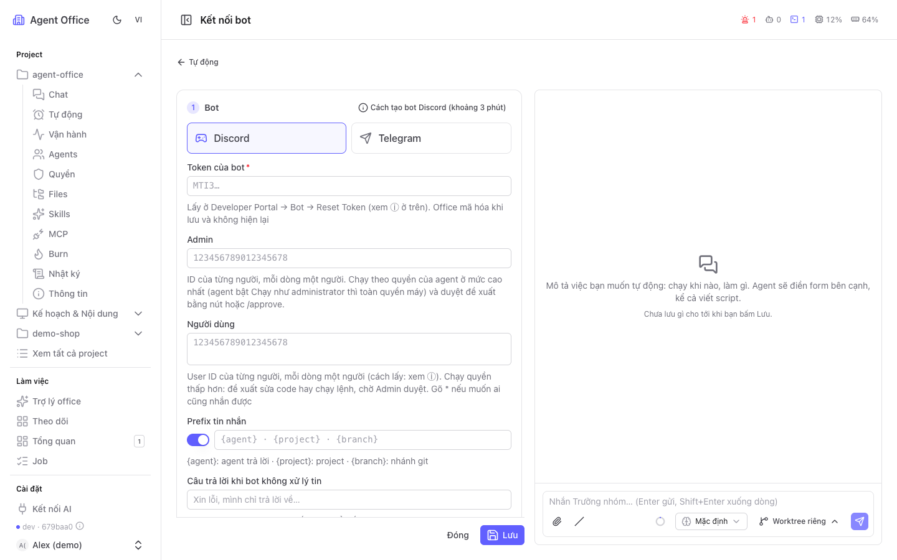
- Tạo bot trên Discord (Developer Portal) hoặc Telegram (@BotFather) rồi dán token.
- Thêm Admin và Người dùng bằng ID chat. Chỉ họ nói chuyện được với bot.
- Nhắn cho bot: "@bot sửa test đang lỗi". Thread Discord giữ mỗi việc riêng một luồng. Bot báo khi đang làm, gửi ảnh và file, và gửi thẻ duyệt có nút bấm.
- Thêm lệnh: mỗi lệnh là một tự động hóa riêng (script hoặc chat).
15Burn
Một agent tự làm việc liên tục trong project cho tới giờ bạn đặt.
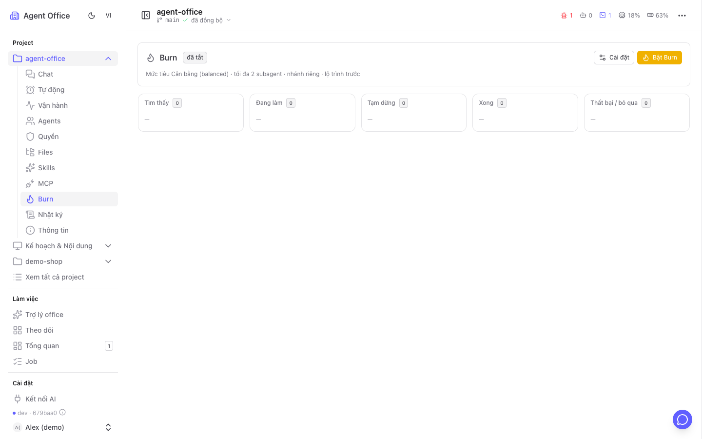
- Tìm ba loại việc: việc dang dở (TODO/FIXME, test lỗi, đề xuất còn treo), chỗ nâng cấp được, và lỗi nhỏ.
- Mỗi việc chạy trong worktree riêng. Kết quả vào nhánh riêng (commit local) hoặc diff chờ duyệt.
- Cài đặt: agent chính, mức model, số subagent tối đa (0–5), trọng tâm ("ưu tiên checkout, bỏ qua docs"), giờ tắt (mặc định là lúc hạn mức tuần của kết nối AI được làm mới, không có thì sau 8 giờ).
- Tắt thì việc đang làm tạm dừng, bật lại thì làm tiếp. Chat của phiên Burn hiện trong Chat với biểu tượng 🔥, nhắn vào đó để chỉnh hướng.
16Files
Duyệt và sửa file trong project mà không rời dashboard (admin).
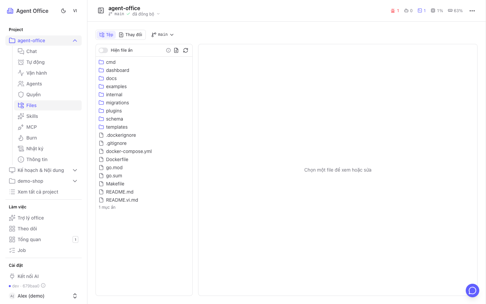
- File trong gitignore và file bí mật mặc định bị ẩn. Bấm Hiện file ẩn để xem.
- Lưu file bí mật hoặc file được bảo vệ cần xác nhận. Nếu người khác đã sửa file trong lúc bạn mở, bạn nhận báo xung đột thay vì ghi đè.
17Skills, MCP & thư viện
Mọi thứ agent dùng được, gom vào một chỗ.
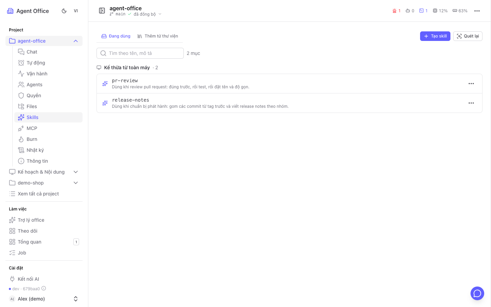
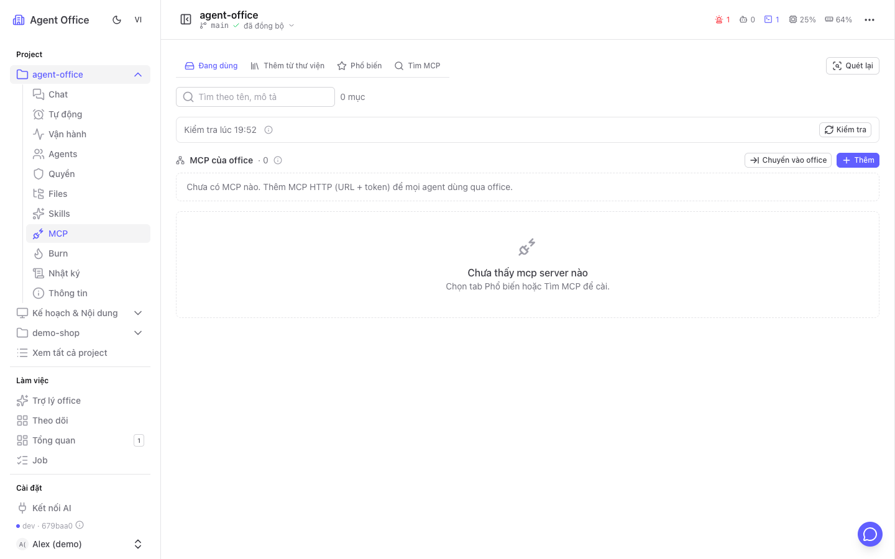
Skills
Xem mọi skill trên máy, cài vào project, lưu vào thư viện, hoặc soạn skill mới cùng AI (Skill mới). Skill được kiểm tra nội dung không an toàn trước khi cài.
Cổng MCP chung
- Thêm MCP (HTTP hoặc stdio), hoặc Chuyển vào office MCP bạn đã có trong Claude Code.
- MCP cần đăng nhập: bấm Kết nối. Office lo OAuth (dò endpoint, đăng ký client, PKCE, tự làm mới token).
- Gán MCP cho agent và đặt quyền cho từng tool: cho phép, hỏi, hoặc chặn. Tool có ghi dữ liệu mặc định phải hỏi.
- Mọi lần gọi đều được ghi lại. Agent Claude Code, Codex và API đều đi qua cùng một cổng.
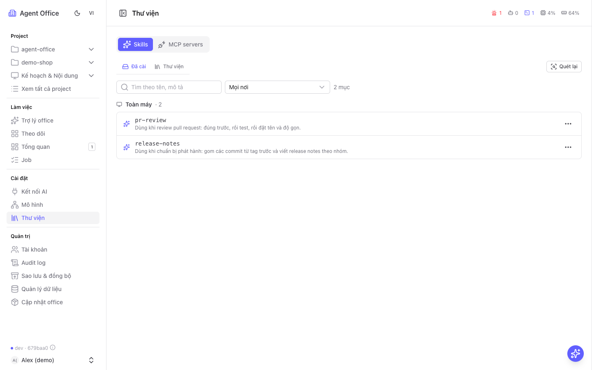
18Trợ lý office
Một chat để quản lý chính office, xuyên suốt mọi project.
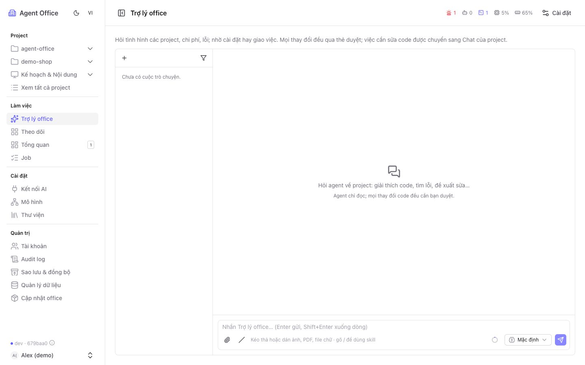
Chọn phạm vi project bằng chip, trợ lý đọc được và đề xuất thay đổi mọi cài đặt: kết nối, ngân sách, agent, tự động hóa. Thay đổi đến dưới dạng thẻ chờ bạn duyệt. Trợ lý cũng có kết nối dự phòng riêng.
19Theo dõi
Nhiều chat của nhiều project đặt cạnh nhau, như các khung trong iTerm.
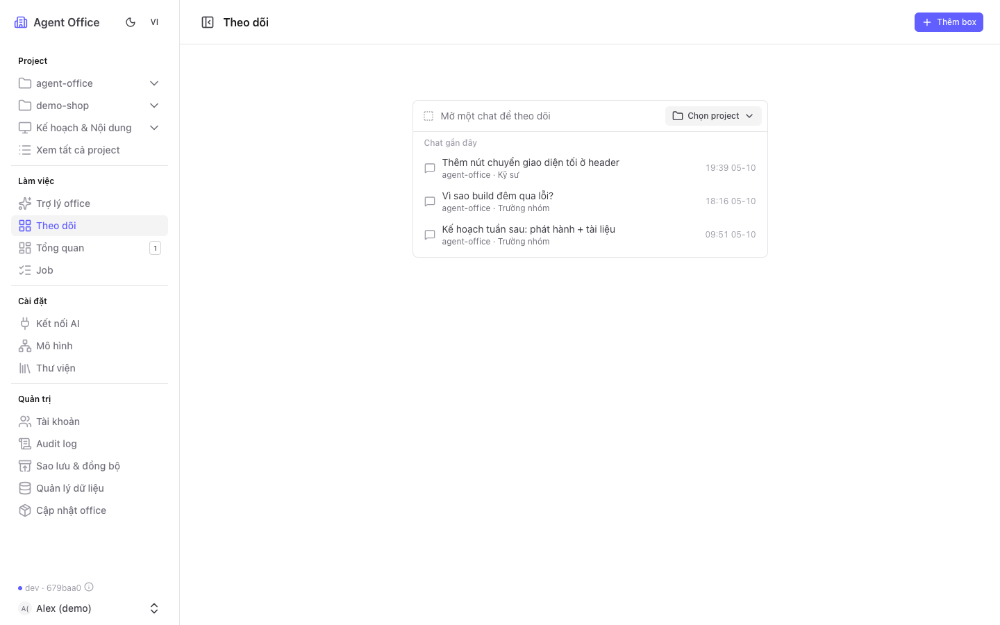
20Job
Mọi lần chạy, của mọi project: lượt chat, tự động hóa, phân tích giám sát.
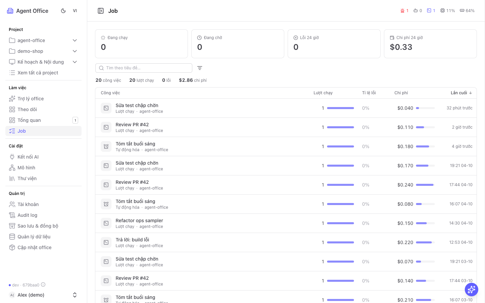
Hủy job đang chạy hoặc chạy lại job lỗi. Job bị cắt ngang do khởi động lại được đánh dấu lỗi, không bao giờ âm thầm chạy lại.
21Nhật ký thay đổi & audit
Ai đổi gì, ai duyệt, và từ đâu.
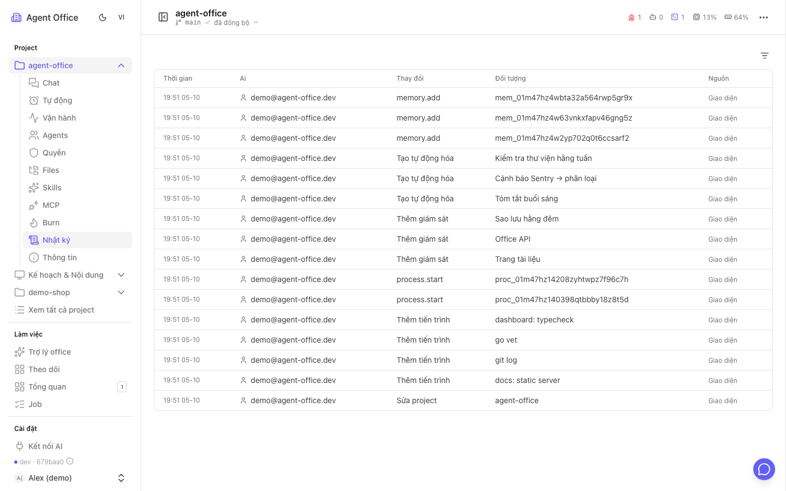
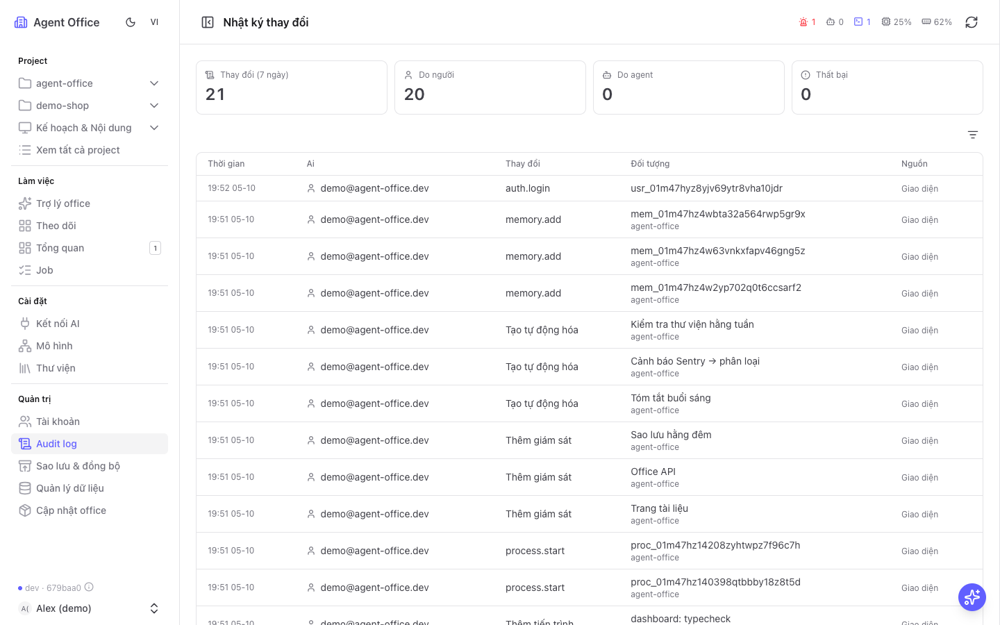
22Thông tin project & ngân sách
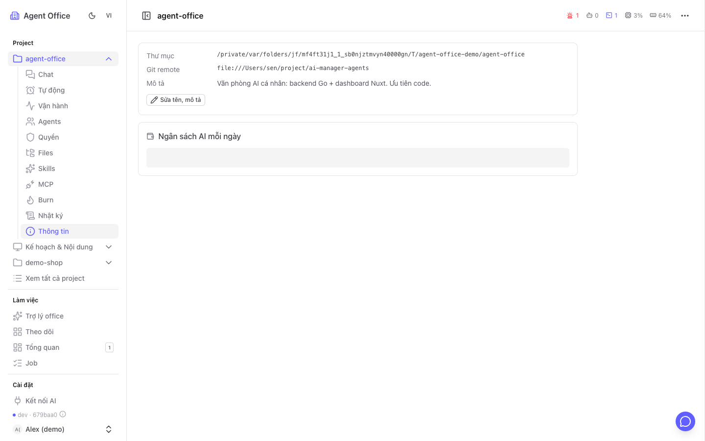
Ngân sách có ba cấp: toàn office (trang Kết nối AI), từng project (tab Thông tin) và từng tự động hóa. Lượt chạy nào vượt trần bị chặn và báo trên trang Tổng quan.
23Tài khoản
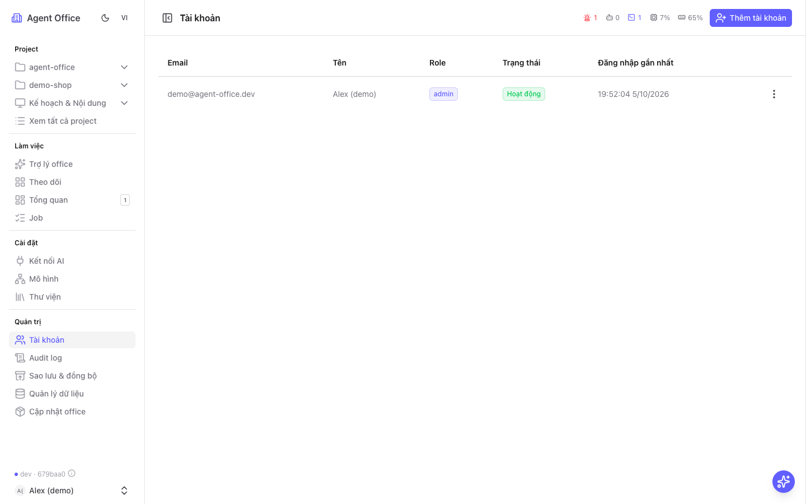
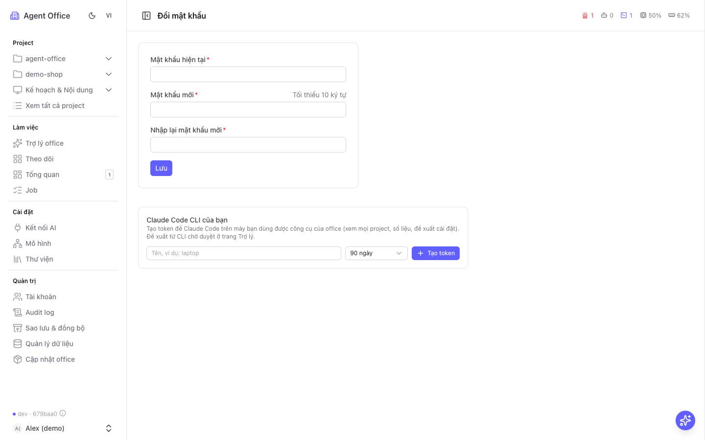
- Admin: làm được mọi thứ. Member: chat và dùng project, chỉ xóa được chat của mình.
- Token cá nhân cho công cụ khác gọi cổng MCP của office với quyền theo vai trò của bạn. Hết hạn sau 30/90/365 ngày, hoặc không hết hạn.
24Dữ liệu, sao lưu & đồng bộ
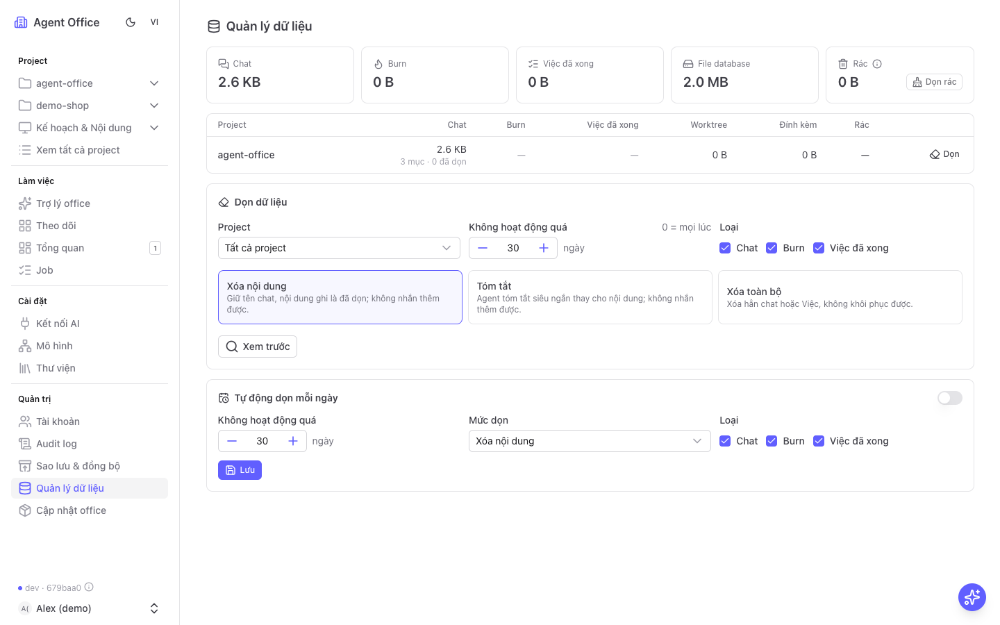
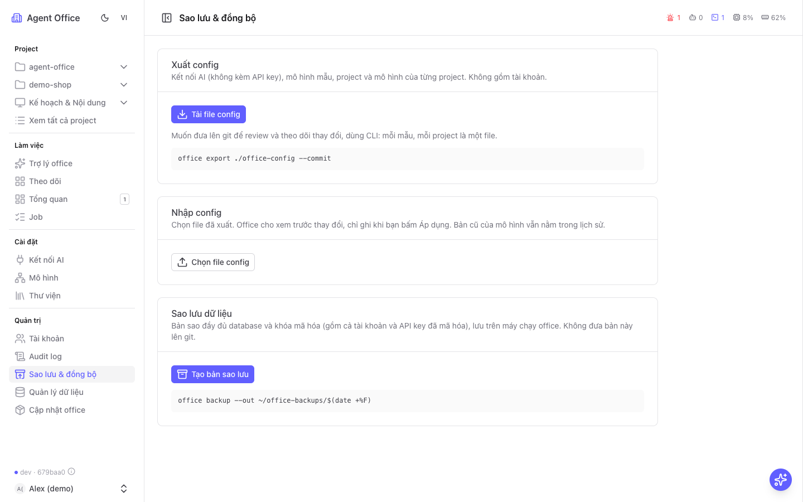
office export ./office-config --commit # một thư mục để lưu trong git
office import ./office-config --dry-run # luôn xem trước
office backup # database + khóa mã hóa25Cập nhật office
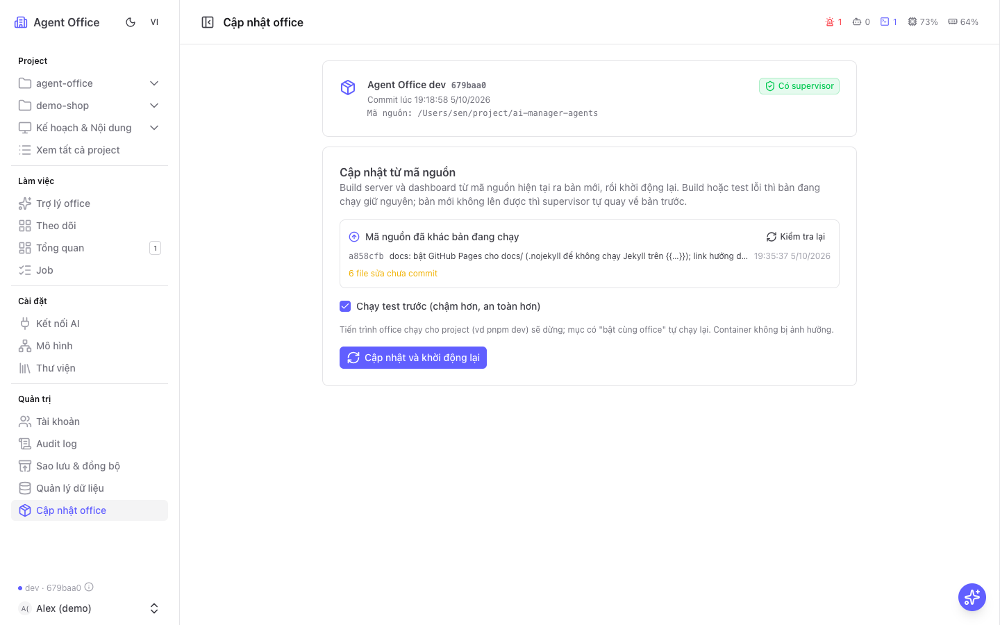
Nút cập nhật chỉ hiện khi mã nguồn khác bản đang chạy. Nếu bản mới không khởi động được, office tự quay về bản cũ. Sidebar hiện phiên bản và commit cuối.
26Lệnh CLI
| Lệnh | Tác dụng |
|---|---|
office run | Supervisor: server API + dashboard, tự bật lại khi dừng, áp dụng bản cập nhật. Cờ: --ui-port, --no-ui, --api, --home. |
office serve | Chỉ chạy server API. |
office init [path] [--local] [--template team] | Đăng ký repo và chọn mô hình. |
office project add|list|rm | Quản lý project. Không có path = trợ lý toàn máy. |
office provider add|list|test | Kết nối AI. |
office template list | Mô hình tổ chức. |
office user create|list|passwd | Admin đầu tiên (thay admin / admin), liệt kê tài khoản, đặt lại mật khẩu. Tài khoản sau: tạo trên dashboard, hoặc create --force. |
office export | import | backup | Chuyển hoặc sao lưu cài đặt và dữ liệu. |
office service install|status|uninstall | Tự bật cùng phiên đăng nhập máy. |
27Mẹo & hỏi đáp
Code của tôi có bị gửi đi đâu không?
Chỉ gửi tới các kết nối AI bạn cấu hình, y như khi bạn dùng trực tiếp các công cụ đó. Bản thân office chạy trên máy bạn và lưu dữ liệu trong SQLite.
Agent có làm hỏng repo không?
Ở chế độ worktree, agent sửa trên một bản sao riêng. Không có gì vào thư mục của bạn cho tới khi bạn duyệt diff. Lệnh ngoài danh sách cho phép, git push và việc khởi động lại đều phải hỏi trước.
Làm sao tiết kiệm chi phí?
- Ưu tiên tự động hóa dạng script: miễn phí, chỉ gọi agent khi cần.
- Cho agent làm việc đơn giản dùng hạng model nhanh, đặt ngân sách cho project và tự động hóa.
- Thêm một kết nối dự phòng rẻ để chạm hạn mức không làm dừng việc.
Việc lặp lại định kỳ?
Nói trong chat: "mỗi sáng T2–T6 lúc 8 giờ, kiểm tra X". Agent đề xuất một tự động hóa, bạn duyệt là xong.
Chụp lại ảnh cho hướng dẫn này
make build && make ui-build
node docs/guide/capture.mjs --lang=vi # office demo trong /tmp, cổng 18787/12704
node docs/guide/capture.mjs --lang=vi --only-missing --reuse # chụp tiếp, dùng lại demo đang chạy
node docs/guide/capture.mjs --stop # tắt office demo